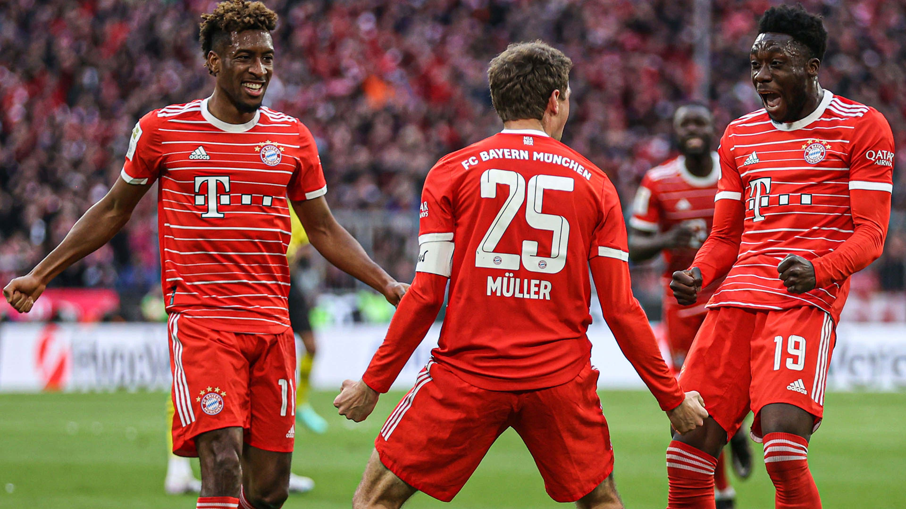

Bayern

Retour
Roi incontesté dans son pays, le Bayern Munich est monté à plusieurs reprises sur le toit de l'Europe. Que retenir du club bavarois dans la prestigieuse Ligue des Champions ?
Fort de son héritage glorieux, tant sur la scène nationale que sur la scène européenne, le club bavarois a marqué de son empreinte la C1. Vainqueur pour la dernière fois en 2020, le Bayern Munich doit encore remplir son armoire à trophées à l’avenir.
Quel est le bilan du Bayern Munich en Ligue des champions ?
Géant du football européen, le Bayern Munich affiche un bilan remarquable en Ligue des champions. Dès les années 70, le club s’impose sur la plus grande scène européenne en décrochant successivement trois Coupes d’Europe des clubs champions de 1974 à 1976. Avec une insatiable soif de victoires, le Bayern multiplie, en parallèle, les titres nationaux, jusqu’à devenir le plus grand club de Bundesliga, sacré une nouvelle fois champion d’Allemagne en 2022-2023 (pour la onzième fois d’affilée).
Six fois champion d'Europe (1974, 1975, 1976, 2001, 2013, 2020), le Bayern se positionne parmi les clubs les plus titrés de l'histoire de la Ligue des champions — à la troisième place avec Liverpool, derrière le Real Madrid (14) et le Milan AC (7). Ses triomphes, jalonnés à travers les décennies, reflètent non seulement la puissance de son effectif, mais également la constance de son excellence. Depuis ses débuts dans la compétition en 1969, l’ogre bavarois compte :
389 matches
234 victoires
77 nuls
78 défaites
Sur ses 40 participations dans la plus prestigieuse compétition européenne, le Bayern Munich affiche donc un taux de victoires égal à 60.15 %. Parmi ses rencontres marquantes, on trouve :
Vs Borussia Dortmund : 3 confrontations (1 victoire - 1 nul - 1 défaite)
Vs FC Barcelone : 13 confrontations (10 victoires - 1 nul - 2 défaites)
Vs Arsenal : 12 confrontations (7 victoires - 2 nuls - 3 défaites)
Vs Real Madrid : 26 confrontations (11 victoires - 3 nuls - 12 défaites)
Quels sont les bons et les moins bons matches du Bayern Munich en Ligue des champions ?
Le Bayern Munich, au fil de ses participations en Ligue des champions, a accumulé un palmarès impressionnant ainsi qu'une série de matches marquants, tant positifs que négatifs. Parmi les meilleurs matches du club bavarois dans cette compétition figure certainement la finale de la Ligue des champions 2012-2013 contre son rival allemand, le Borussia Dortmund, où le Bayern a remporté le titre avec une victoire 2-1 grâce à des buts d'Arjen Robben et de Mario Mandzukic. En outre, la demi-finale retour contre le FC Barcelone lors de la saison 2012-2013, où le Bayern a écrasé Barcelone 0-3 au Camp Nou (avec un score cumulé de 7-0 sur les deux rencontres), a également marqué les esprits. On peut aussi évoquer la finale du “Final 8” remportée en 2020 contre le PSG (1-0), avec un but de l’ancien Parisien Kinglsey Coman.
Lire aussi : Le PSG et la Ligue des champions : l’essentiel à savoir sur le club dans la compétition
En revanche, certains des matches les plus douloureux du Bayern en Ligue des champions incluent la finale mythique de 1999 contre Manchester United, où le Bayern a concédé deux buts dans les arrêts de jeu et a perdu 2-1, après avoir mené durant toute la rencontre. La défaite 4-0 contre le Real Madrid en demi-finale retour de la saison 2013-2014 reste également un souvenir douloureux pour les fans du Bayern. Malgré ces revers, le Bayern Munich demeure l'un des clubs les plus redoutables et respectés de la Ligue des champions.
Qui sont les meilleurs buteurs du Bayern Munich en Ligue des champions ?
Parmi les meilleurs buteurs du Bayern Munich sur la scène européenne, on retrouve des légendes telles que Robert Lewandowski. Le Polonais, aujourd’hui au FC Barcelone, a inscrit de nombreux buts décisifs pour le club bavarois en Ligue des champions lors de son passage, entre 2014 et 2022. Des joueurs de renoms comme Thomas Müller, Gerd Müller, Mario Gomez et Arjen Robben ont également contribué à écrire l'histoire glorieuse du Bayern en Ligue des champions.
Voici le top 10 des meilleurs buteurs du Bayern Munich en Ligue des champions :
Robert Lewandowski : 61 buts
Thomas Müller : 53 buts
Gerd Müller : 34 buts (Coupe des clubs champions)
Arjen Robben : 25 buts
Mario Gómez : 23 buts
Giovane Élber : 21 buts
Claudio Pizarro : 18 buts
Franck Ribéry : 18 buts
Roy Makaay : 17 buts
Kingsley Coman : 16 buts